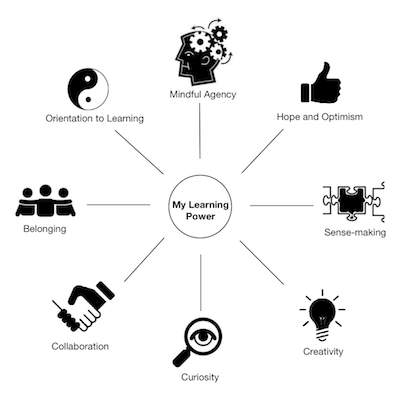
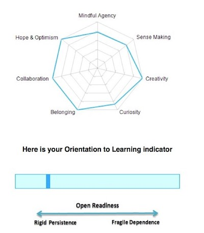

Chapter 2 The data science mindset
2.1 CLARA
Each person has their own learning preferences and habits of mind that shape their response to challenges and learning opportunities.
CLARA (Crick LeArning for Resilient Agency) is a tool used to prompt reflection on a multidimensional construct called “Learning Power” with eight dimensions: curiosity, creativity, sense making, belonging, collaboration, hope and optimism, mindful agency and openness to change. The UTS Graduate Attributes have a strong resonance with these dimensions. The CLARA tool is used as part of MDSI activities, aiming to help the students maximise their development results through understanding themselves better, namely with regards to their approach to learning and challenges.

The tool is survey-based and provides a profile-style feedback covering each of the following dimensions:
Curiosity
- Wanting to get beneath the surface & find out more
- Always wondering why and how
Creativity
- Using my intuition & imagination to generate new ideas & knowledge
- Taking risks & playing with ideas and artefacts to arrive at new solutions
Sense making
- Making connections between what I already know & new information & experience
- Making meaning by linking my story, my new learning & my purpose
Belonging
- Being part of a learning community at work, at home, in education & in my social networks
- Knowing I have social resources to draw on when I need them
Collaboration
- Being able to work with others, to collaborate and co-generate new ideas and artefacts
- Being able to listen and contribute productively to a team
Hope and optimism
- Having the optimism & hope that I can learn & achieve over time
- Having a growth mindset; believing I can generate my own new knowledge for what I need to achieve Mindful agency
- Taking responsibility for my own learning over time through defining my purposes, understanding and managing my feelings,
- Knowing how I go about learning & planning my learning journey carefully Openness to change
- An emotional orientation of being open & ready to invest in learning, having flexible self-belief, willing to persist & manage any self-doubt
- A necessary prerequisite for developing resilience in learning
Here is an example of an output from CLARA, showing the resulting profile, based on the responses provided in the survey.

Learning profiles can change over time, so MDSI conducts two sets of CLARA tests, to allow the students to compare their profile changes and reflect on their development progress.
CLARA survey will be organised by MDSI and each student will receive a link and instructions on how to utilise this tool.
2.2 Data Science Professional Competencies
Competency can be defined as “effective application of skill, knowledge and abilities to on-the-job-behaviour and capability to perform to job requirements”. MDSI supports the ongoing development professional development efforts and offers a tool that can help the students evaluate their skills and abilities in various domains associated with the data science professional competencies. Students are encouraged to utilise the tool to identify the key competencies associated with their individual career aspirations. For each relevant competency, students evaluate their current competency levels, identify any gaps and use the information to create a set of actions that would form their professional development plan. The competencies model is introduced to students as part of 36100 (Data Science and Innovation) subject through a self-assessment exercise. The competencies are divided into two groups: technical and managerial, describing the following competency (proficiency) levels for each domain: Beginner, Competent, Advanced and Expert.
Technical:
- Mathematics and statistics
- Programing and scripting languages
- Databases and data storage
- Computing systems, platforms, security, integration
- Data mining
- Data modelling
- Analytics, predictive modelling and machine learning
- Data visualisation
- Business analysis and interpretation
- Product development
Interpersonal/managerial:
- Creativity
- Communication
- Data strategy
- Line management
- Data management and governance
- Facilitation and presentation
- Project management
Competency levels:
- Beginner: able to assist and perform simple tasks
- Competent: able to perform tasks independently
- Advanced: able to perform complex tasks
- Expert: able to perform complex transformative, strategic or trans-disciplinary tasks
The competencies assessment exercise aims to prompt the students to take a proactive attitude to their professional development efforts and effectively apply their analytical skills, dedication and professionalism in managing their career objectives.
The competencies assessment exercise covers the following steps:
- Evaluate your current competency level for each domain on the list
- Choose a set of domains (no more than 6) that are relevant to your planned development for this subject, your course and your career goals.
- Identify the goal competency levels for the selected domains and describe related professional development outcomes that support your assessment
- Analyse your development outcomes in the context of your career goals and identify the gaps between your current and goal competency levels
- Develop a set of actions needed to achieve desired level of competencies and bridge the identified gap
- Provide feedback and suggestions for the improvement of the current list of competencies, descriptions etc.
2.3 Ethics and Privacy
Its important to understand that security, privacy and ethics are three different things, although heavily intertwined in the ‘internet of things’.
What is ethical when it comes to data and the internet of things? Is privacy having a login or not being identifiable as an individual?
The world of Ethics and Privacy is changing, similar to the definition that now includes much more than it did a decade ago. Computer security like a login is no longer sufficient to providing protection of privacy which is more focused on ensuring that only people who should have the authority to access your information should be able to.
Current Privacy legislation addresses control and authentication processes of whom can access your information via direct disclosures and how this information should be stored by the party who is collecting this information, it does not address disclosures that can be made based on inferences that can be drawn from big data of which your information is a part. Is the value or conclusions that could be drawn from information as part of big data considered private information?
A sensible framework in relation to Ethics and Privacy where data is concerned is highlighted in the Belmont report which identifies two rules to consider “(1) do not harm and (2) maximize possible benefits and minimize possible harms.”
A big ethical dilema of late is the rich data sources that various provider hold, that if pooled together will strip all possibility of anonymity.
For more on this read:
http://www.tandfonline.com/doi/full/10.1080/08900523.2014.863126?src=recsys http://libres.uncg.edu/ir/uncg/f/N_Kshetri_Big_2014.pdf
2.4 Digital Footprint
Your digital footprint https://en.wikipedia.org/wiki/Digital_footprint is the name given to the data that is recorded about you all day every day. It can be the time and phone number of someone that you called, the mobile phone tower that you were connected to at the time of making the call and how long you spoke for. It is the IP address of your computer when you connect to the internet. It is the list of items you pay for when you go through the checkout at the supermarket and the eftpos card number you used to pay for the items. It is the surveillance footage you appear in when you move through monitored public spaces. It is stories you ‘like’ or share on social media sites. It is the journeys that your GPS navigation stores about your travels. It is every email you send and every click you make when you browse the internet.
Your digital footprint is the inescapable record of your existence by doing nothing more than living your life. It is an important aspect of modern society as many services that you enjoy depend on the data you generate in order to provide critical services. A bank can’t tell you how much money you have without keeping record of your bank transactions. For good or for evil, this data comes embedded with far more information about you. By looking at the kinds of things you spend your money on or the businesses that you spend your money at and the time of day that you spend your money there, it can be determined where you live and where you work.
As an MDSI student, you will learn to think critically and ethically about data collection and how it can be used for good and for evil. The best place to start your thinking is with your own digital footprint, become aware of how big it is and how you feel about it.
It’s important to note that very little permission is sought on data collection and when it is sought, very little education is provided in terms of the use of that data. Very few providers who collect data clarify or specify what the data they collect is used for.
You are responsible for your digital footprint. Generate it wisely.
2.5 Opportunity for overseas exchange
Some great opportunities exist within MDSI with our Program Director having many contacts in many other countries which enable us to be able to explore greater opportunities for overseas exchange.
You need to do a few things before this opportunity is explored as set out by the Program Director to ensure for an easier way forward if this is an opportunity you want to explore.
2.6 Electives
You need to select four electives during your MDSI course. These electives should be selected to assist you in your growth as a student and as a data science professional. These subjects enable you to add to your toolbox of where you are heading with your journey.
Electives can be selected from any school however you will still be subjected to the pre-requisites for any possible subject, so it will depend on the requirements of the subject.
We suggest that when you apply for a subject with a prerequisite that you also apply for a waive of the prerequisite if the prerequisite is a subject you are familiar with but have not done with UTS and get exemption for that requisite.
This is not always easy, or approved and is subject to each School’s internal views or policies. It is definitely a consideration to take.
You can apply for the subject ( and a waiver of prerequisites if required) early as CIC is not limited by inter-faculty time restrictions.
Our best tip is : get in early.